高效能人士的七个习惯管理员操作指南
面向新管理员，说明后台常用页面、核心按钮和推荐操作流程。
重点补充：数据分析活跃度、期次复制、每日打卡庆祝配置、小凡看见点赞/弹幕反馈、查看申请批量处理。
截图中的红色编号对应说明；部分真实用户、订单和内容数据已遮挡。
5分钟上手流程
- 每天先看仪表板，有异常再进入明细页。
- 复盘运营时重点看数据分析里的“活跃度”。
- 新建期次优先复制上一期，尤其推荐从已校验过的“秩序之锚”复制。
- 运营内容时关注每日打卡庆祝配置、小凡看见反馈、查看申请审核。
- 遇到删除、重置、批量审核等操作，先核对对象和影响范围。
安全提醒
不要在未确认对象和影响范围的情况下点击删除、重置、批量同意/拒绝等操作。先查询核对，再处理。
左侧菜单速查
| 区域 | 包含菜单 | 什么时候用 |
|---|---|---|
| 数据看板 | 仪表板、数据分析 | 看总体状态、趋势和用户活跃度 |
| 业务管理 | 报名管理、用户管理、支付记录、期次管理 | 处理报名、用户、订单和期次，期次新建优先复制上一期 |
| 内容运营 | 内容管理、每日打卡、小凡看见、查看申请 | 维护课节、配置庆祝动画、给小凡看见做反馈、处理展示申请 |
1. 仪表板
用途：用来快速判断今天后台有没有待处理事项，适合作为每天进入后台后的第一站。
操作流程
- 先看顶部总用户数、总报名数、已支付报名、支付总额和活跃期次。
- 再看“待处理事项”，确认是否有待审批、待支付或今日活跃检查。
- 需要追踪明细时，再点击“查看全部”或进入对应菜单处理。
重点：仪表板只负责发现问题，不建议在这里直接下结论。
看到异常数字时，要回到报名、支付、申请等明细页核对。
截图编号说明
- 1 左侧当前菜单位置。
- 2 顶部核心经营数字，先判断整体状态。
- 3 待处理事项和最近列表入口，用来跳转追踪明细。
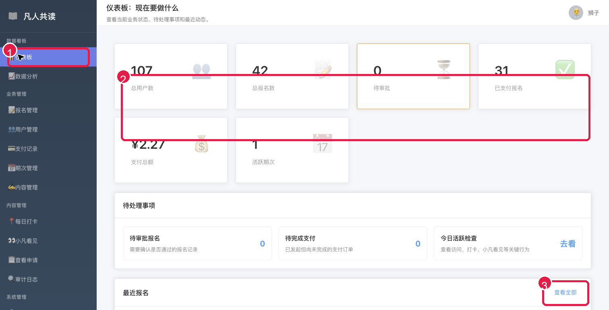
红色编号对应本节说明，部分真实数据已遮挡。
2. 数据分析
用途：用来复盘过去一段时间的报名、支付和用户活跃情况，其中“活跃度”页是判断用户有没有真正使用小程序的重点。
操作流程
- 进入数据分析后，先设置日期范围并刷新。
- 切到“活跃度”页，重点看访问小程序、打卡、看自己小凡、看他人小凡、查看课程、去晨读等曲线。
- 如果某一天活跃度异常升高或降低，再去每日打卡、小凡看见或课程内容页核对原因。
重点：活跃度比单纯报名数更能反映用户是否在持续参与。
不要只看当天数字，要结合趋势线判断活动是否在变好或变差。
截图编号说明
- 1 数据分析入口。
- 2 活跃度 tab：重点查看用户行为趋势。
- 3 今日活跃概览卡片。
- 4 关键行为活跃人数趋势图。
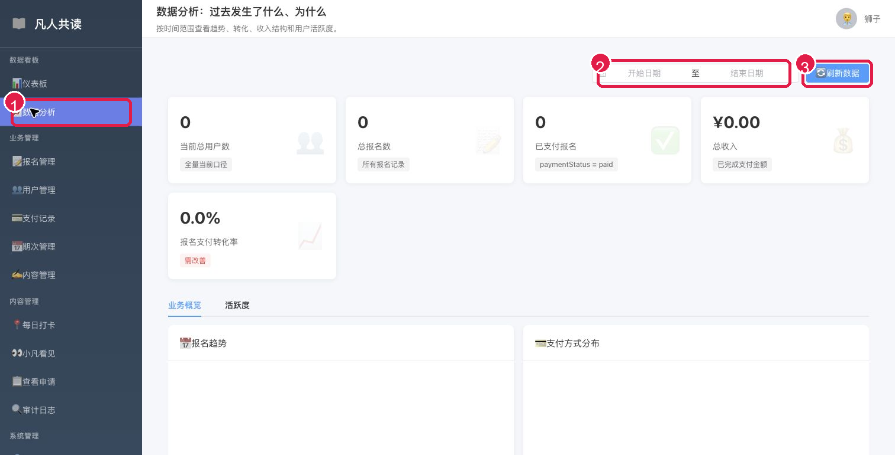
红色编号对应本节说明，部分真实数据已遮挡。
3. 报名管理
用途：用来查询报名记录、核对支付状态，以及同步报名名称到用户昵称。
操作流程
- 输入姓名或昵称，也可以结合支付状态、期次筛选。
- 点击“搜索”查看结果。
- 如果发现报名名称和用户昵称不一致，再使用“同步报名名称到昵称”。
重点：同步昵称会影响展示名称，执行前先确认这是本次要处理的问题。
查不到记录时先清空筛选条件，再重新搜索。
截图编号说明
- 1 报名管理入口。
- 2 姓名、支付状态、期次筛选区。
- 3 搜索按钮。
- 4 同步报名名称到昵称。
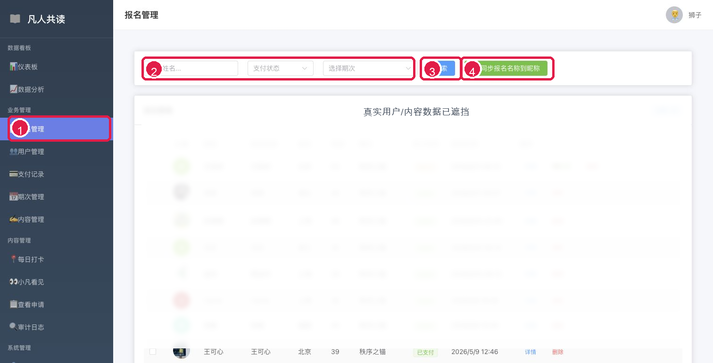
红色编号对应本节说明，部分真实数据已遮挡。
4. 用户管理
用途：用来查看用户资料、电话、状态和注册信息，主要用于定位用户。
操作流程
- 输入用户昵称、邮箱或其他关键词。
- 按状态继续筛选。
- 在列表中核对用户信息后，再决定是否进入后续处理。
重点：用户管理更适合查询和核对身份。
涉及状态变更时要先确认原因，避免误操作。
截图编号说明
- 1 用户管理入口。
- 2 搜索和筛选区。
- 3 用户列表，用来核对身份、状态和注册信息。
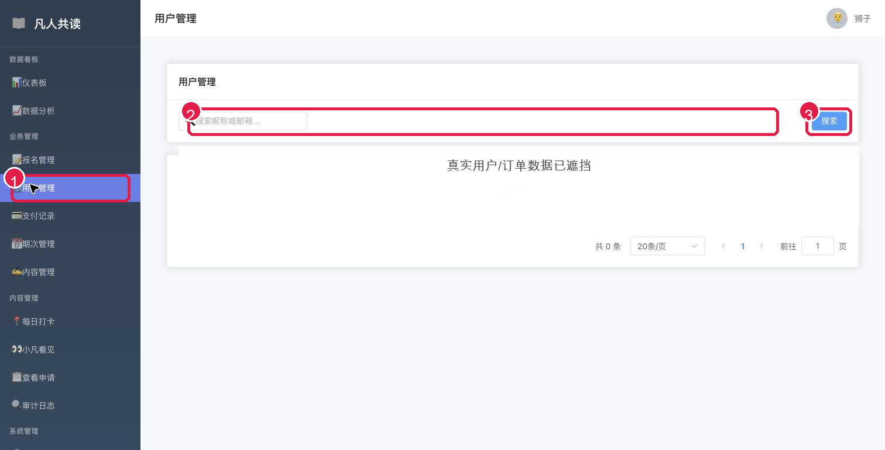
红色编号对应本节说明，部分真实数据已遮挡。
5. 支付记录
用途：用来查订单、金额、支付方式和支付状态，适合处理支付核对和异常排查。
操作流程
- 输入订单号或用户名，必要时按状态、支付方式筛选。
- 点击“刷新”重新加载支付记录。
- 查看总收入、已完成、处理中、失败/取消等统计。
- 单笔订单有问题时，先点“详情”核对，再考虑状态修正。
重点：“失败/取消”是支付状态统计，不是页面报错。
重置待支付、状态修正类操作必须先确认订单真实情况。
截图编号说明
- 1 支付记录入口。
- 2 筛选条件和刷新按钮。
- 3 支付统计卡片。
- 4 单笔订单操作区。
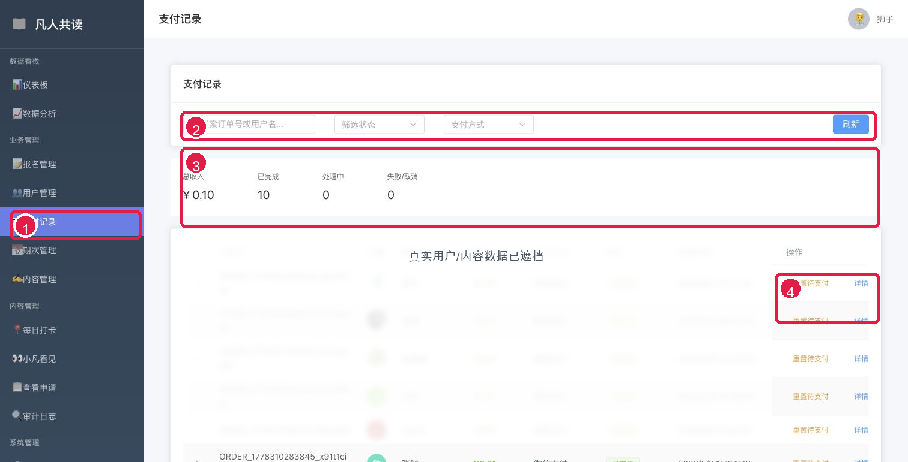
红色编号对应本节说明，部分真实数据已遮挡。
6. 期次管理
用途：用来创建和维护读书营期次。新建期次时，优先推荐使用“复制”上一期，而不是从零新建。
操作流程
- 进入期次管理后，找到上一期已经校验过的期次。
- 点击“复制”，打开复制期次弹窗。
- 保留已验证课程内容，只修改期次名称、标题、日期、价格、报名人数等必要字段。
- 确认文字无误后再保存。
重点：目前“秩序之锚”的内容已经校验过，后续新期次建议从这一期复制出去。
复制会同时复制该期次下的课程内容，这样能减少漏配、错配和格式问题。
不要直接删除旧期次，除非确认没有关联报名、课程、打卡数据。
截图编号说明
- 1 期次管理入口。
- 2 复制期次弹窗。
- 3 复制会带出上一期的基础信息。
- 4 这里修改新期次的日期、天数、价格等字段。
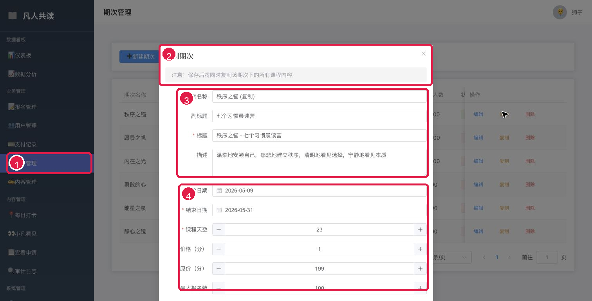
红色编号对应本节说明，部分真实数据已遮挡。
7. 内容管理
用途：用来维护某个期次下的课程课节，包括新增、编辑、下架和删除。
操作流程
- 先选择要管理的期次。
- 点击“新增课节”创建新内容。
- 已有课节优先使用“编辑”修正文字或配置。
- 需要临时隐藏时优先“下架”，不要直接删除。
重点：内容管理依赖期次，先选对期次再操作。
复制期次后，课程内容会一起复制，通常只需要改少量文字。
截图编号说明
- 1 内容管理入口。
- 2 期次选择器。
- 3 新增课节。
- 4 课节的编辑、下架、删除操作。
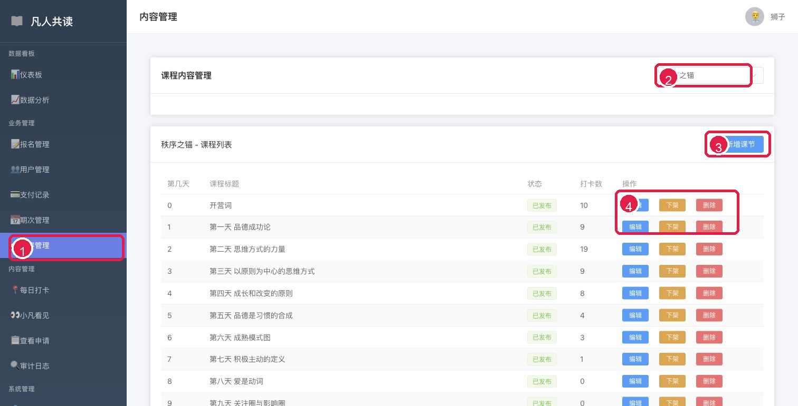
红色编号对应本节说明，部分真实数据已遮挡。
8. 每日打卡
用途：每日打卡分两页看：第一页处理打卡记录查询，第二页维护阅读完成后的庆祝动画。
8.1 打卡记录页
- 进入每日打卡后，先确认当前停留在“打卡记录”tab。
- 顶部统计卡片用于快速查看打卡总数、今日打卡、打卡用户和总积分。
- 在搜索和筛选区输入用户昵称、选择期次和日期范围，再点击“查询”。
- 列表右侧可以查看详情、修改或删除单条打卡记录。
重点：打卡记录页主要用于查询和核对。删除或修改打卡前，要先确认用户、期次、课程和打卡时间。
截图编号说明
- 1 每日打卡入口。
- 2 打卡记录 tab。
- 3 顶部打卡统计。
- 4 用户、期次、日期筛选区。
- 5 打卡列表和详情/修改/删除操作。
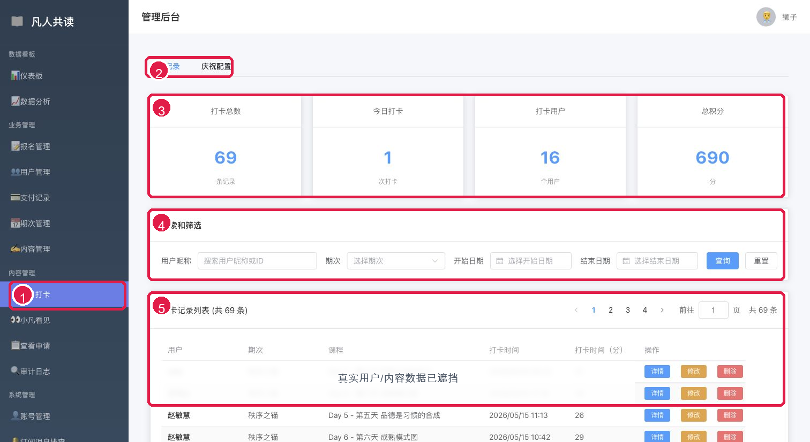
第一页：打卡记录查询与管理。
8.2 庆祝配置页
- 点击“庆祝配置”tab，进入动画配置页。
- 点击动画卡片可选中某个庆祝效果。
- 每个动画可以打开或关闭“随机启用”，也可以点击“预览”查看效果。
- 随机卡片表示每次随机展示一种已启用动画。
重点：庆祝配置会影响小程序端阅读完成后的反馈体验。建议保留多个已验证过的动画随机启用，让用户每次完成阅读都有新鲜感。
截图编号说明
- 1 每日打卡入口。
- 2 庆祝配置 tab。
- 3 动画特效卡片列表。
- 4 随机启用开关和预览按钮。
- 5 随机模式卡片。
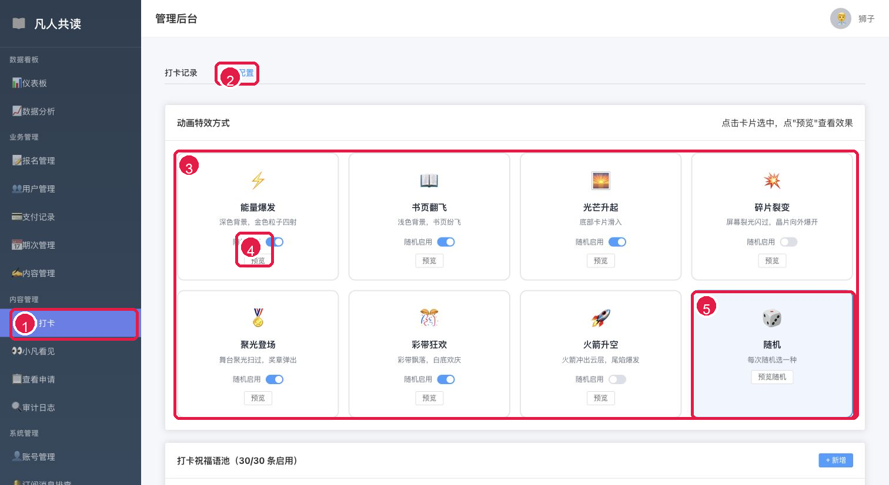
第二页：阅读完成庆祝动画配置。
9. 小凡看见
用途：小凡看见分两页看：第一页管理小凡看见列表，第二页进入“查看”后做内容查看、点赞和弹幕反馈。
9.1 小凡看见首页
- 进入小凡看见后，先选择期次筛选列表。
- 需要新增内容时，点击“新增小凡看见”。
- 列表里可以查看分页、内容摘要、被看见人、发布状态和创建时间。
- 单条内容右侧可执行查看、编辑、下架或删除。
重点：日常维护优先使用“查看”和“编辑”。临时隐藏内容用“下架”，不要直接删除。
截图编号说明
- 1 小凡看见入口。
- 2 期次筛选和新增按钮。
- 3 分页导航。
- 4 小凡看见列表。
- 5 查看、编辑、下架、删除操作。
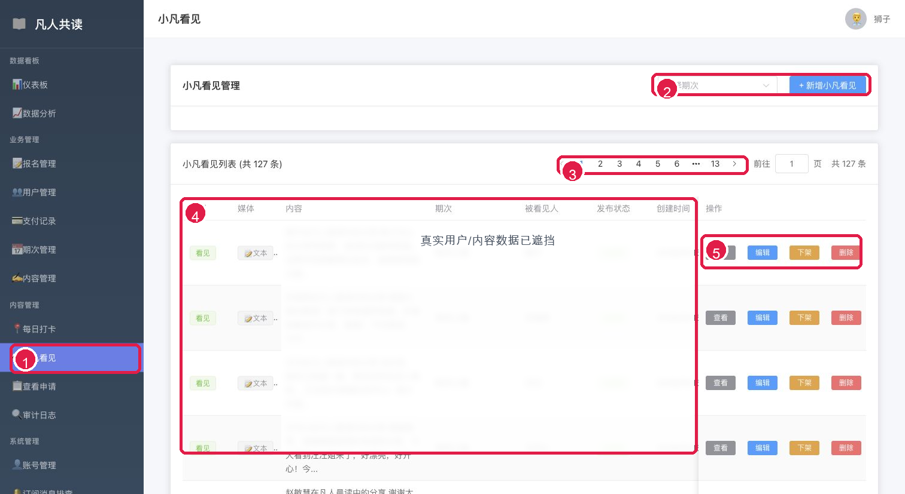
第一页：小凡看见列表管理。
9.2 查看后的内容与操作
- 在列表中点击“查看”，打开小凡看见详情弹窗。
- 查看正文、被看见人、当前阅读位置和右侧弹幕操作列表。
- 在“管理操作”里搜索用户昵称，选中后可点“点赞”。
- 输入弹幕内容后，点击“发送弹幕”，以选中用户身份发送反馈。
重点：点赞和弹幕不是普通查看功能，而是管理员可用于给优秀小凡看见做反馈和互动的后台能力。发送弹幕前必须确认选中的用户身份和弹幕内容。
截图编号说明
- 1 小凡看见入口。
- 2 查看弹窗：正文、被看见人和阅读位置。
- 3 右侧弹幕操作列表。
- 4 搜索用户后点赞。
- 5 输入弹幕并发送。
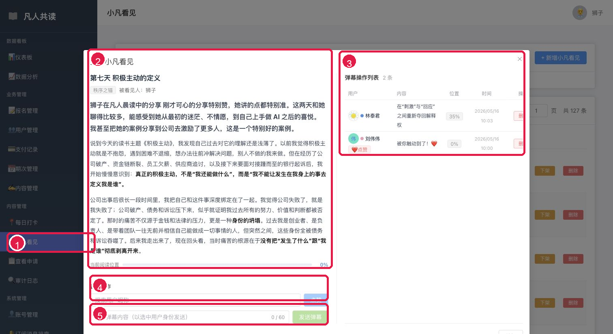
第二页：查看小凡看见后的内容和后台反馈操作。此图按要求未遮挡。
10. 查看申请
用途：用来处理用户申请被“小凡看见”的记录，包括筛选、单条处理、批量处理和导出。
操作流程
- 先看顶部统计：总申请数、待审批、已同意、已拒绝和平均响应时间。
- 按申请状态、申请者、被申请者筛选后点击“查询”。
- 勾选多条记录后可批量同意或批量拒绝。
- 单条记录可以同意、拒绝、查看详情或删除。需要留档时使用“导出数据”。
重点：批量同意/拒绝会影响用户展示权限，操作前必须确认勾选对象。
如果只是排查原因，先点详情，不要直接同意或拒绝。
截图编号说明
- 1 查看申请入口。
- 2 顶部申请统计。
- 3 筛选和查询区。
- 4 批量同意、批量拒绝、导出数据。
- 5 单条同意、拒绝、详情、删除。
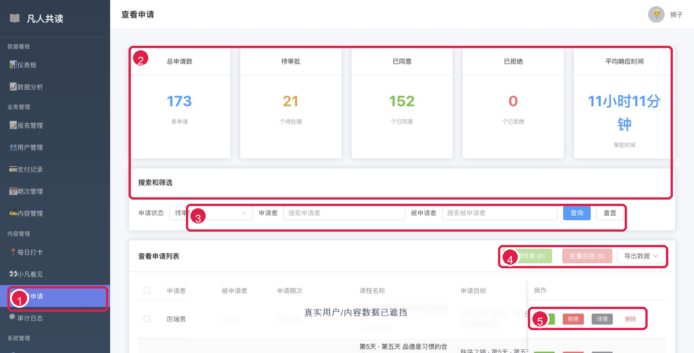
红色编号对应本节说明，部分真实数据已遮挡。